Materi Ajar
Penerapan Segitiga Siku-Siku
Menyelesaiakan Segitiga Siku-Siku
Sekarang kita dapat menemukan nilai fungsi untuk sudut lancip apa pun, kita dapat mengunakan nilai fungsi yang telah ditemukan untuk menyelesaikan segitiga siku-siku. Menyelesaikan suatu segitiga siku-siku berarti mencari panjang semua sisi dan besar semua sudut.
CONTOH 1 Suatu Segitiga
Pada Segitiga ABC di samping, tentukan niali a, b, dan B, di mana a dan b mewakili panjang sisi dan B mewakili besar ∠B. Di sini kita menggunakan huruf standar untuk memberi nama sisi dan sudut segitiga siku-siku: sisi a berhadapan dengan sudut A, sisi b berhadapan dengan sudut B, di mana a dan b adalah kaki segtiga, dan sisi c adalah sisi miring dan berhadapan dengan sudut C.
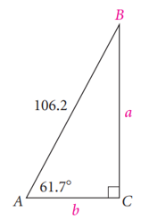
Penyelesaian
Pada segitiga ABC, kita ketahui bahwa :
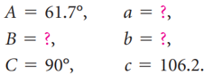Karena jumlah besar sudut suatu segitiga adalah 180° dan besar ∠C = 90°, jumlah dari ∠A dan ∠B adalah 90°. dengan demikian,
\(B\ =\ 90°-A\ = \ 90°-61.7°\ = 28.3°\)
Kita diberi sudut lancip dan sisi miring. Hal ini menunjukkan bahwa kita dapat menggunakan rasio sinus dan cosinus untuk mencarinya a dan b
\(sin\ 61.7° =\frac{de}{mi}\ =\frac{a}{106.2°}\) dan \(cos\ 61.7° =\frac{sa}{mi}\ =\frac{b}{106.2°}\)
Selesaiakan a dan b dan bulatkan ke persepuluhan terdekat, diperoleh
\(a =106.2 \cdot sin\ 61.7°\) dan \(b\ = 106.2 \cdot cos\ 61.7°\)
\(a \approx 93.5\) , dan \(b \approx 50.3\)
Dengan demikian
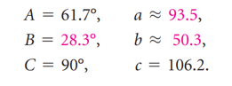CONTOH 2 Suatu Segitiga(Sudut)
Pada Segitiga ABC berikut, tentukan ∠D dan ∠F, dan d.
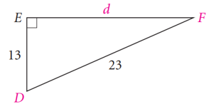
Penyelesaian
Pada segitiga ABC, kita ketahui bahwa :
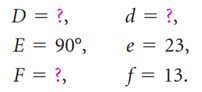
Diketahui panjang sisi samping yang berdakatan dengan D dan sisi miringnya. Dalam hal ini kita dapat rasio kosinus:
\(cos\ D\ = \frac{sa}{mi}\ = \frac{13}{25}\)
Sekarang kita cari sudut yang cosinusnya \( \frac{13}{23}\), didapatkan besar ∠D
\(D \approx 55.58°\)
Karena jumlah ∠D dan ∠F adalah 90°, kita dapat mencari besar ∠F
\(\angle F = 90°- ∠D \approx 90°-55.58°\ \approx 34.42°\)
Kita bisa menggunakan persamaan Pythagoras untuk mencarinya d, untuk mencari d kita bisa menggunakan fungsi trigonometri cos F, sin D, rasio tangen atau kotangen untuk D atau F.
\(tan\ D = \frac{de}{sa}\ = \frac{d}{13}\) atau \(tan\ 55.58° = \frac{d}{13}\)
\(d \approx 13 \cdot tan 55.58° \approx 19\)
Sehingga didapatkan
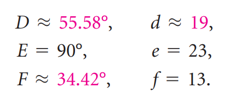Aplikasi pada Permasalahan Kontekstual
Segitiga siku-siku dapat digunakan untuk memodelkan dan memecahkan banyak masalah terapan.
CONTOH 3 Air Terjun Niagara
Saat Mengunjungi Air Terjuan Niagara, seorang turis yang berjalan menuju Air Terjun Horseshoe di jalan setapak di sebelah Niagara Parkway memperhatikan pintu masuk Gua Angin tepat di seberang Sungai Niagara. Dia terus berjalan sejauh 1000 kaki lagi dan menemukan bahwa pintu masuk masih terlihat tetapi sudutnya kira-kira 50° terhadap jalan setapak.
a) Berapa meter turis tersebut dari pintu masuk Gua Angin?
b) Berapa perkiraan lebar Sungai Niagara pada saat itu?
Penyelesaian
a) Kita mengetahui panjang sisi samping yang berdekatan dengan sudut 50° kemudian kita ingin mencari panjang sisi miringnya. Dengan demikian kita dapat menggunakan fungsi cosinus untuk mencari sisi miringnya
\(cos\ 50° = \frac{1000\ kaki}{c}\)
\(c = \frac{1000\ kaki}{cos\ 50°}\ \approx 1556\ kaki)
Jadi, setelah berjalan 1000 kaki, turis tersebut berada sekitar 1556 kaki dari pintu masuk Gua Angin.
b) Kita mengetahui panjanng sisi samping yang berdekatan dengan sudut 50° dan ingin mencari panjang sisi depan seberangan dengan sudut 50°. Kita dapat menggunakan fungsi tangen untuk mencari panjang sisi depan
\(tan\ 50° = \frac{b}{1000\ kaki}\)
\(b = 1000\ kaki \cdot tan\ 50° \approx 1192\ kaki\)
Jadi, Lebar Sungai Niagara kira-kira 1192 kaki pada saat itu.
CONTOH 4 Kasus untuk Rumah
Perancang rumah dapat menggunakan fungsi trigonometri untuk menentukan panjang kasau sebuah rumah. Mereka pertama-tama memilih kemiringan atap atau rasio kemiringan atap. Kemudian menggunakan segitiga dengan perbandingan itu, mereka menghitung panjang kasau yang dibutuhkan untuk rumah. José sedang membangun kasau untuk atap dengan kemiringan \(\frac{10}{12}\) pada sebuah rumah yang lebarnya 42 kaki. Temukan panjang x dari kasau rumah.
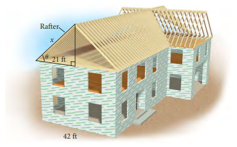
Penyelesaian
Pertama-tama kita cari dulu sudut θ yang terbentuk dari kasau dengan dinding samping. Kita ketahui bahwa kenaikan pada kasau adalah 10, dan larinya adalah 12, sehingga kita dapat menggunakan fungsi tangen untuk menentukan sudut yang sesuai dengan kemiringan \(\frac{10}{12}\):
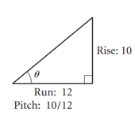
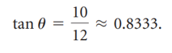
Dengan menggunakan kalkulator, kami menemukan bahwa \(\theta \approx 39,8°\). Karena nilai fungsi trigonometri θ hanya bergantung pada besar sudut dan bukan pada besar segitiga, maka sudut pada kasau juga 39,8°. Untuk menentukan panjang x dari kasau, kita dapat menggunakan fungsi cosinus. (Lihat gambar di sebelah kiri.) Perhatikan bahwa lebar rumah adalah 42 kaki, dan satu kaki segitiga ini panjangnya setengahnya, yaitu 21 kaki.
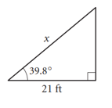
\(cos 39.8° = \frac{21\ kaki}{x}\)
\(x \cdot cos\ 39.8° = 21\ kaki\)
\(x = \frac{21\ kaki}{cos\ 39.8°}\ \approx 27.3\ kaki\)
Jadi, Panjang kasau untuk rumah ini kira-kira 27,3 kaki
Tahukah Kamu?
Banyak aplikasi dengan segitiga siku-siku melibatkan sudut elevasi atau sudut depresi. Sudut antara garis horizontal dan garis pandang di atas garis horizontal disebut sudut elevasi. Sudut antara garis horizontal dan garis pandang di bawah garis horizontal disebut asudut depresi. Misalnya, anda melihat lurus ke depan lalu menggerakkan mata ke atas untuk melihat pesawat terbang yang mendekat. Sudut yang dilalui mata anda adalah sudut elevasi. Jika pilot pesawatnya melihat ke depan kemudian melihat ke bawah, mata pilot melewati sudut depresi.
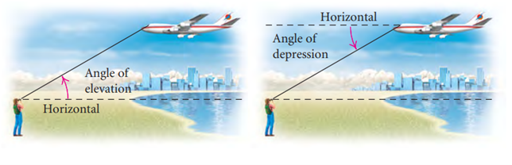
CONTOH 5 Lift Udara Gondola
Di Telluride, Colorado, terdapat wahana gondola gratis yang memberikan pemandangan kota dan pegunungan sekitarnya yang spektakuler. Gondola dari kota pada ketinggian 8725 kaki menempuh jarak 5750 kaki ke Stasiun St. Sophia, yang ketinggiannya 10,550 kaki. Kemudian melanjutkan perjalanan 3913 kaki ke Mountain Village, yang ketinggiannya 9500 kaki.
a) Berapakah sudut elevasi dari kota ke Stasiun St. Sophia?
b) Berapa sudut depresi dari Stasiun St. Sophia ke Mountain Village?
Penyelesaian
Kita mulai dengan memberi label pada gambar dengan informasi yang diberikan
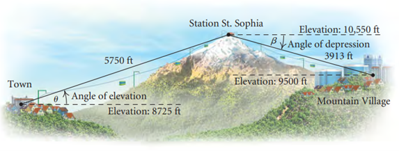
a) Perbedaan ketinggian Stasiun St. Sophia dan ketinggian kota adalah 10,550 kaki - 8725 kaki, atau 1825 kaki. Ukuran ini adalah panjang sisi yang berlawanan dengan sudut elevasi θ, pada segitiga siku-siku yang ditunjukkan di sebelah kiri. Karena mengetahui sisi depan dihadapan θ dan sisi miringnya, kita dapat mencarinya dengan menggunakan fungsi sinus. Pertama-tama kita cari sin θ:
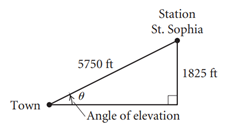
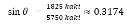
Dengan mengunakan kalkulator, kita dapat menemukan nilai θ dari \(sin\ θ = 0.3174\), sehingga diperoleh
\(\theta \approx 18.5°\)
Jadi, sudut elevasi dari kota ke Stasiun St. Sophia kira-kira \(18,5°\).
b) Jika garis sejajar dipotong oleh garis transversal, sudut dalam berseberangan adalah sama besar. Jadi sudut depresinya β dari Stasiun St. Sophia ke Mountain Village sama dengan sudut elevasi dari Mountain Village ke Station St. Sophia, jadi kita dapat menggunakan segitiga siku-siku seperti gambar di sebelah kiri.
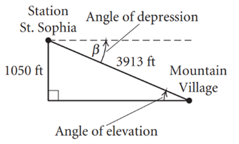
Perbedaan ketinggian Stasiun St. Sophia dan ketinggian Mountain Village adalah 10,550 kaki - 9500 kaki, atau 1050 kaki. Karena kita mengetahui sisi depan yang berhadapan dengan sudut elevasi dan sisi miringnya, kita dapat menggunakan perbandingan fungsi sinus lagi:
\(sin\ \beta = \frac{1050\ kaki}{3913\ kaki}\ \approx 0.2683\)
Dengan mengunakan kalkulator, kita dapat menemukan nilai β dari \(sin\ \beta = 0.2683\), sehingga diperoleh,
\(\beta \approx 15.6°\)
Jadi, Sudut depresi dari Stasiun St. Sophia ke Mountain Village kira-kira 15,6°.
CONTOH 6 Ketinggian Tanaman Bambu
Bambu adalah tanaman darat dengan pertumbuhan tercepat di dunia dan menjadi kayu populer untuk lantai kayu keras. Ia dapat tumbuh hingga 46 in per hari dan mencapai tinggi dan ketebalan maksimum dalam satu musim pertumbuhan. (Sumber:Pertunjukan Pertanian, Jil. 34, Nomor 4, 2010, hal. 7; Bisnis Bambu U-Cut; American Bamboo Society) Untuk memperkirakan tinggi rebung, seorang petani berjalan sejauh 27 kaki dari pangkal bambu dan memperkirakan sudut elevasi ke puncak rbambu adalah 70°. Kira-kira berapa tinggi bambu tersebut ?
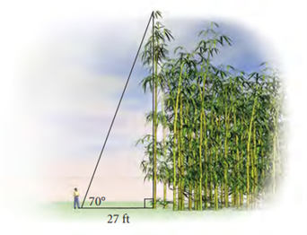
Penyelesaian
Dari gambar diatas, kita dapat mengetahui
\(tan\ 70° = \frac{h}{27\ kaki}\)
\(h = 27\ kaki \cdot tan\ 70° \approx 74\ kaki\)
Jadi, Ketinggian bamboo tersebt kira-kira 74 kaki.
Leave a comment